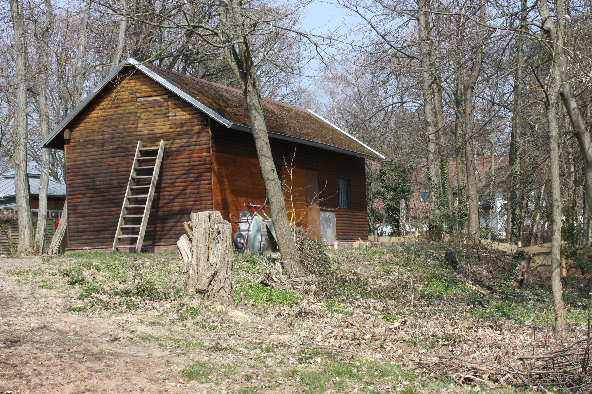
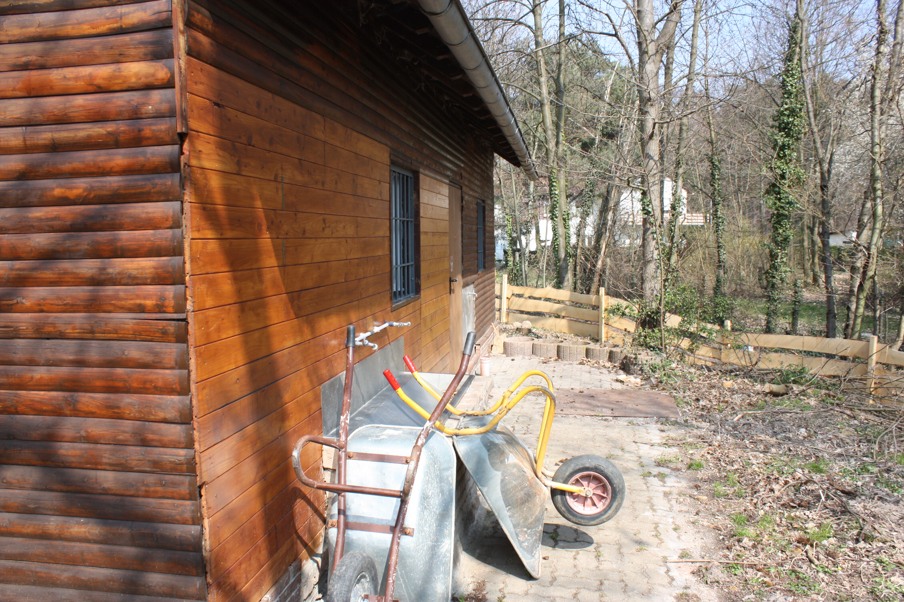
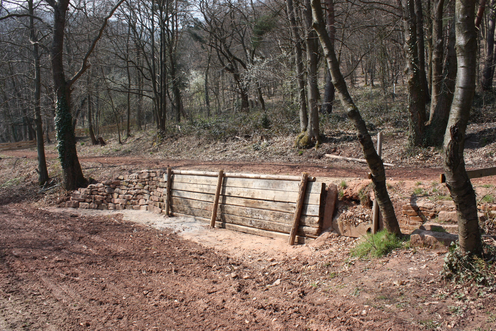
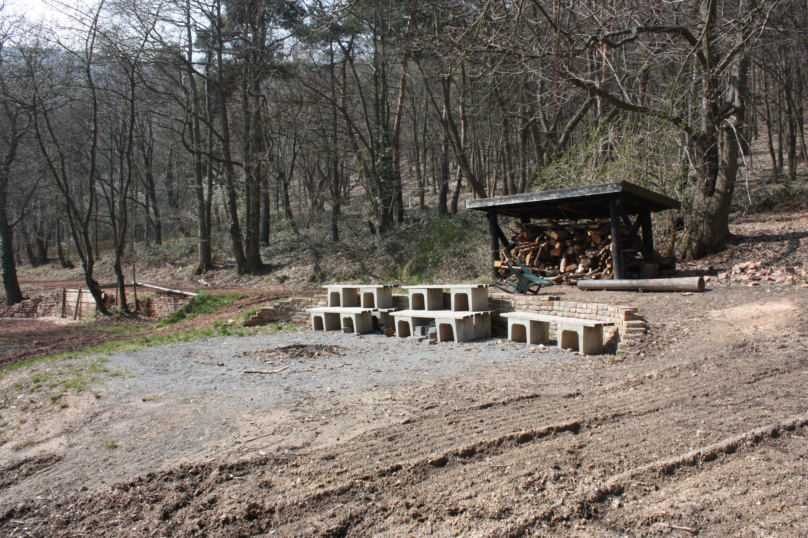

Lagerplatz
Gelände
Unser Zeltplatz liegt am Rande des Neustadter Wohngebiets "Oberhambach", ca. 300m ü. NN. Das Gelände ist zum Großteil von Wald umgeben, es besteht freie Sicht zum Hambacher Schloss. Die in Terrassen gegliederte Zeltfläche umfasst etwa 7000m ² und kann bis 120 Personen aufnehmen. Das Gelände ist zu allen Seiten hin eingezäunt und mit einem Tor verschließbar. Der Lagerplatz liegt wunderschön, ist aber trotzdem einfachst zu erreichen, da die Bushaltestelle gerade mal 50 m entfernt ist. Man kann, wenn man will auf alle Vorzüge der Zivilisation zurückgreifen, oder aber sich wie inmitten der Natur fühlen. Das Biosphärenreservat Naturpark Pfälzerwald mit unzähligen, bestens beschilderten Wegen und Hütten liegt direkt nebenan, aber auch die Rheinebene ist greifbar nah.
Einrichtung
Auf dem Gelände befindet sich eine 2011 kernsanierte Sanitärhütte mit Wasser - und Stromversorgung. In den zwei Waschräumen sind zwei bzw. drei Toiletten, je eine Dusche und zwei Waschplätze vorhanden. Im Herrenwaschraum zusätzlich drei Urinale. Für die Innenräume ist ein Warmwasserboiler in Betrieb.
Außen am Gebäude gibt es weitere vier Spülstellen. Auf dem Gelände sind drei Feuerstellen verteilt, eine davon ist mit einem Sitzkreis umgeben, eine andere befindet sich in unserer Grillhütte. Diese ist mit Wasser und Strom (auch Starkstrom) ausgestattet. Die letzte ist in unserem dreireihigem Atrium. Dieses bietet Platz für alle und schafft eine gemütliche Atmosphäre. Für Kothen und Jurten von Pfadfindergruppen gibt es ausreichend Stangenholz.
Hinweis:
Weitere Informationen finden Sie im Infopaket!
Lagerplatzanfragen bitte direkt an lagerplatz@vcp
hambach.de
Aktuelles: Umbauarbeiten auf unserem Zeltplatz
Vor kurzem wurden einige Umbauarbeiten auf unserem Lagerplatz durchgeführt. Da aufgrund von Wildschweinen der Lagerplatz unvermietbar wurde, wurde ein neuer Zaun um den Lagerplatz gesetzt und weitere Umbauarbeiten durchgeführt.
   